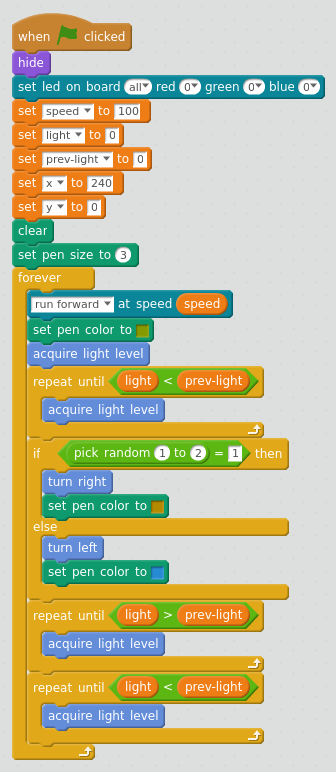
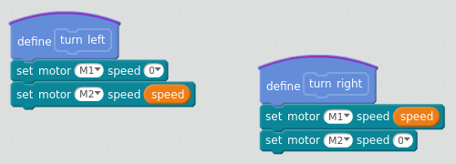
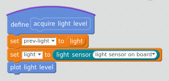
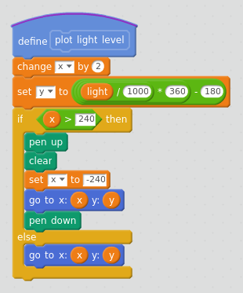
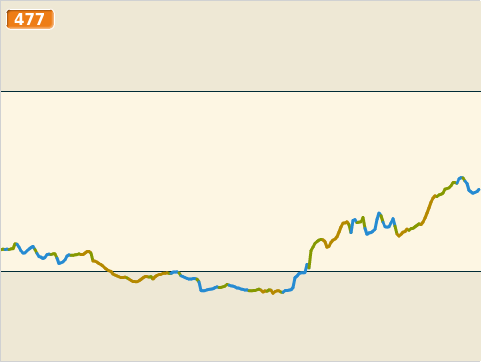
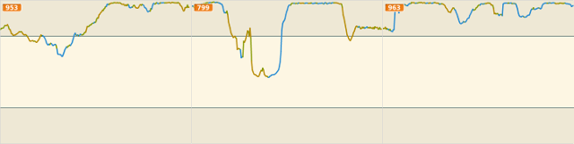
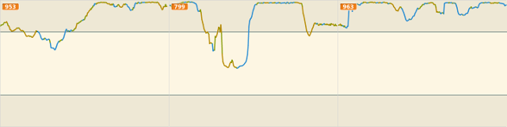
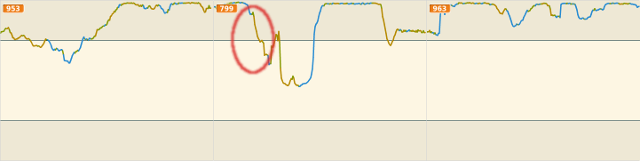

risorse | mbot cerca-luce
In controllo di mBot da mBlock si utilizza il robot per acquisire il livello di luminosità lungo una traiettoria scelta dal pilota. È possibile programmare mBot in modo che raggiunga autonomamente il posto ove l'intensità luminosa è massima? Un comportamento del genere risulterebbe utile se il robot fosse alimentato ad energia solare: quando il livello delle batterie scende al di sotto della soglia di sicurezza il robot mette in atto questa strategia per ridurre il tempo di carica.
mBot è dotato di un unico sensore luminoso posto tra i due led: questo rende difficile determinare la direzione verso la quale procedere per massimizzare l'irradiazione del robot — ce ne fossero due, sarebbe “sufficiente” orientare il robot dal lato del sensore maggiormente illuminato. Ho quindi pensato di basare le scelte sulla direzione da prendere sul cambiamento di luminosità confrontando il livello di irradiazione alla posizione rispetto alla precedente. La stragegia iniziale era così articolata:
1. procedi in avanti 2. se il livello di luminosità è aumentato, vai al punto 1. 3. ruota verso destra 4. se il livello di luminosità è diminuito, ruota verso sinistra 5. continua la rotazione 6. se il livello di luminosità è aumentato, vai al punto 5. 7. torna al punto 1.
Alla prova dei fatti questa procedura si è rivelata poco efficace: mBot sembrava vagare senza una meta apparente, quando invece sarebbe stato lecito attendersi una preferenza per le zone più illuminate della stanza.
Ho provato allora a semplificare la parte della rotazione:
1. procedi in avanti 2. se il livello di luminosità è aumentato, vai al punto 1. 3. imposta una rotazione verso destra o sinistra, a caso 4. continua la rotazione 5. se il livello di luminosità è diminuito, vai al punto 4. 6. continua la rotazione 7. se il livello di luminosità è aumentato, vai al punto 6. 8. torna al punto 1.
La modifica è marginale: prima il robot ruotava verso destra e invertiva immediatamente il senso di rotazione se il livello di luminosità era calato; ora prosegue nella rotazione fino a quando il livello di luminosità non aumenta, e a quel punto continua fino a quando non scende.
La parte di programma che si occupa del movimento
Il progetto mBlock fa uso di alcuni blocchi personalizzati; i più semplici sono quelli che si occupano della rotazione di mBot, introdotti per rendere più leggibile la sezione principale:
I blocchi per la rotazione sul posto di mBot
La parte di acquisizione mostra come viene realizzato l'effetto “memoria”: dapprima il livello di luminosità della posizione precedente viene copiato nella variabile prev-light, quindi viene acquisito il livello alla posizione attuale e posto nella variabile light. Infine, si procede con l'aggiornamento del diagramma:
Il blocco che realizza l'acquisizione del livello di luminosità
La procedura di aggiornamento del diagramma è analoga a quella già vista in controllo di mBot da mBlock, cancellazione automatica compresa:
Il blocco per l'aggiornamento del grafico del livello di luminosità
Il programma cambia il colore della penna in funzione del tipo di movimento in atto: verde per l'avanzamento, arancio per la rotazione verso destra, azzurro per la rotazione verso sinistra. In questo modo è facile, guardando il diagramma, ricostruire la traiettoria seguita da mBot per raggiungere la sua posizione finale:
Il colore della traccia indica il tipo di movimento effettuato da mBot in quel frangente
Come si comporta il programma in un ambiente reale? La composizione sottostante mostra i primi quattro minuti di una passeggiata del robot iniziata sotto il tavolo della cucina(!):
 

Il programma sembra funzionare a dovere…
Messo alla prova, il programma ha dato buona prova di sè: una volta raggiunta l'area maggiormente illuminata, il robot ha cominciato a girare su sè stesso, come si può verificare analizzando la traccia nella parte finale del quarto quadro, ove il valore di luminosità è massimo e il colore verde praticamente assente. A quel punto ho oscurato di proposito il robot, esattamente in corrispondenza della caduta di luminosità evidenziata qui sotto:
Ebbene, il robot non ci ha messo molto, una volta uscito da una zona d'ombra limitrofa, a riportarsi nella regione di massima illuminazione. Il movimento continuo costituisce comunque un pericolo, perché a volte accade che il robot finisca in aree a minor luminosità — si veda ad esempio l'attenuazione verificatasi tra il quinto e sesto quadro. Varrebbe forse la pena di arrestare il robot una volta raggiunto un livello di illuminazione ottimale.
Il filmato sottostante mostra mBot entrare in una zona d'ombra adiacente a quella di massima luminosità per uscirne subito dopo:
Il programma «cerca-luce» è scaricabile qui.
Pagina modificata il 31/05/2018